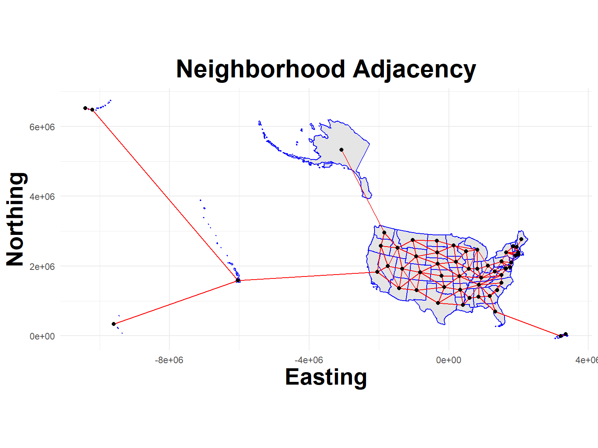

Build a flu hospitalization data file from individual state reports and all available years. The hospitalizations() function from the cdcfluview package does most of the work by querying FluView, but seems only to be able to take small bites at a time.
Wrangle Flusurv data:
Note that the cdcfluview package only includes through Spring of 2020. Because of this, the data is filtered at 2019 and a static file manually downloaded from FluView with more recnt reports (eventually this data will be moved to www.healthdata.gov).
Hide code
range(flusurv_all$year)
[1] 2003 2020
Hide code
flusurv <- flusurv_all %>%filter(age_label =="Overall", region !="Entire Network", year >=2010& year <=2019) %>%#the pkg fails on dates after 2020,ughmutate(location_name = region,network = surveillance_area,weeklyrate =as.numeric(weeklyrate),epiweek = year_wk_num) %>%select(location_name, year, epiweek, network, rate, weeklyrate)#manual download from site 2023-06-01flusurv_2020 <-fread("D:/Github/flusion/data/FluSurveillance_2020.csv") %>%rename_all(~gsub(" |-", "", .)) %>%filter(AGECATEGORY =="Overall", SEXCATEGORY =="Overall", RACECATEGORY =="Overall", CATCHMENT !="Entire Network", MMWRYEAR >=2020) %>%#Prior to this date was downloaded in code abovemutate(location_name = CATCHMENT,network = NETWORK,year = MMWRYEAR,epiweek = MMWRWEEK,rate = CUMULATIVERATE,weeklyrate =as.numeric(WEEKLYRATE)) %>%select(location_name, year, epiweek, network, rate, weeklyrate)#Join date ranges and scale weeklyrateflusurv =rbind(flusurv, flusurv_2020)flusurv$weeklyrate.s =as.numeric(scale(flusurv$weeklyrate, scale = T, center=T))#combine NY dataflusurv$location_name[flusurv$location_name =="New York - Albany"] ="New York"flusurv$location_name[flusurv$location_name =="New York - Rochester"] ="New York"flusurv <- flusurv %>%group_by(location_name, year, epiweek) %>%summarise(rate =mean(rate, na.rm=T),weeklyrate =mean(weeklyrate, na.rm=T),weeklyrate.s =mean(weeklyrate.s, na.rm=T))#Check for duplicatesunique(duplicated(flusurv))
[1] FALSE
Hide code
dim(flusurv)
[1] 5676 6
Hide code
head(flusurv)
location_name
year
epiweek
rate
weeklyrate
weeklyrate.s
California
2010
1
NA
0.4
-0.4771582
California
2010
2
NA
0.2
-0.5561987
California
2010
3
NA
0.2
-0.5561987
California
2010
4
NA
0.2
-0.5561987
California
2010
5
NA
0.2
-0.5561987
California
2010
6
NA
0.1
-0.5957189
Same FluSurv process as above, but now for the Full Network reports
National Respiratory and Enteric Virus Surveillance System.
Again, unfortunately only available through a manual: https://gis.cdc.gov/grasp/fluview/fluportaldashboard.html
Files illustrated here were downloaded on June 2, 2023.
Neighbour list object:
Number of regions: 56
Number of nonzero links: 242
Percentage nonzero weights: 7.716837
Average number of links: 4.321429
Link number distribution:
1 2 3 4 5 6 7 8
5 3 10 12 10 11 3 2
5 least connected regions:
1 13 38 42 54 with 1 link
2 most connected regions:
49 56 with 8 links
Hide code
#viewplot_neighbors(States, nb_flusion)

Hide code
#convert to matrixnb2INLA("J", nb_flusion)J =inla.read.graph("J")